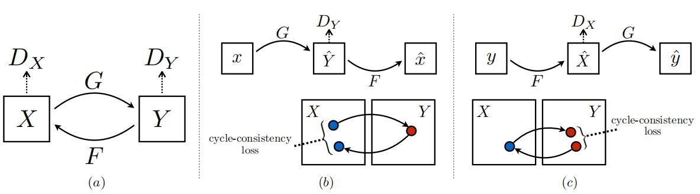

Cycle GAN¶
综述¶
会议时间：IEEE International Conference on Computer Vision 2017 (ICCV 2017)
源码地址：https://github.com/junyanz/pytorch-CycleGAN-and-pix2pix
针对领域：对抗生成网络、图像转换
网络结构¶

损失函数
论文中主要提到三种损失：
- 一致性损失：A域图像X从A转换到B，再从B转回A，得到图像Y，将最终输出的图像Y和原始输入图像X做l_1损失，对于B域的图像也有类似的损失；
- 鉴别器A和鉴别器B的分类损失。
源码中还提到一种损失：
- identity损失：A域图像X传入B到A的生成器中，得到图像Y，将Y和X做l_1损失，训练网络的识别能力，辅助网络真正理解A域信息，对于A到B的生成器有类似的损失。
生成器¶
以ResNet为基础
class ResnetGenerator(nn.Module):
"""Resnet-based generator that consists of Resnet blocks between a few downsampling/upsampling operations.
We adapt Torch code and idea from Justin Johnson's neural style transfer project(https://github.com/jcjohnson/fast-neural-style)
"""
def __init__(self, input_nc, output_nc, ngf=64, norm_layer=nn.BatchNorm2d, use_dropout=False, n_blocks=6, padding_type='reflect'):
"""Construct a Resnet-based generator
Parameters:
input_nc (int) -- 输入图片的通道数(the number of channels in input images)
output_nc (int) -- 期望输出图片的通道数(the number of channels in output images)
ngf (int) -- 采样开始时的通道数，默认64(the number of filters in the last conv layer)
norm_layer -- 标准化层(normalization layer)
use_dropout (bool) -- ResNet卷积模块是否使用dropout层(if use dropout layers)
n_blocks (int) -- ResNet卷积模块的数量(the number of ResNet blocks)
padding_type (str) -- 填充操作方法(the name of padding layer in conv layers: reflect | replicate | zero)
"""
assert(n_blocks >= 0)
super(ResnetGenerator, self).__init__()
if type(norm_layer) == functools.partial:
use_bias = norm_layer.func == nn.InstanceNorm2d
else:
use_bias = norm_layer == nn.InstanceNorm2d
# nn.ReflectionPad2d表示镜像填充
# 定义第一个卷积模块，将图片通道数调整为64
model = [nn.ReflectionPad2d(3),
nn.Conv2d(input_nc, ngf, kernel_size=7, padding=0, bias=use_bias),
norm_layer(ngf),
nn.ReLU(True)]
n_downsampling = 2
# 添加下采样层
for i in range(n_downsampling): # add downsampling layers
# i表示下采样的次数，mult表示通道放大的倍数，通道变化情况64->128->256。
# 并且每下采样一次，图片长宽尺寸变为原来的二分之一
mult = 2 ** i
model += [nn.Conv2d(ngf * mult, ngf * mult * 2, kernel_size=3, stride=2, padding=1, bias=use_bias),
norm_layer(ngf * mult * 2),
nn.ReLU(True)]
mult = 2 ** n_downsampling
# 添加ResNet模块，即主要的特征提取，数据转换模块
for i in range(n_blocks):
# padding_type表示填充类型，norm_layer表示归一化层，use_dropout表示是否使用dropout，use_bias表示卷积层是否使用偏置参数
model += [ResnetBlock(ngf * mult, padding_type=padding_type, norm_layer=norm_layer, use_dropout=use_dropout, use_bias=use_bias)]
# 添加上采样层，这里与下采样层类似
for i in range(n_downsampling): # add upsampling layers
mult = 2 ** (n_downsampling - i)
# 唯一不同的是这里使用逆卷积操作，来扩大图像尺寸
model += [nn.ConvTranspose2d(ngf * mult, int(ngf * mult / 2),
kernel_size=3, stride=2,
padding=1, output_padding=1,
bias=use_bias),
norm_layer(int(ngf * mult / 2)),
nn.ReLU(True)]
# 添加最后一层卷积模块，将图像通道数从64转换为指定的通道数，如果是三色图，则将输出通道数转为3
model += [nn.ReflectionPad2d(3)]
model += [nn.Conv2d(ngf, output_nc, kernel_size=7, padding=0)]
model += [nn.Tanh()]
# 将模型操作合并
self.model = nn.Sequential(*model)
def forward(self, input):
"""Standard forward"""
return self.model(input)
主要的卷积模块¶
class ResnetBlock(nn.Module):
"""Define a Resnet block"""
def __init__(self, dim, padding_type, norm_layer, use_dropout, use_bias):
"""Initialize the Resnet block
A resnet block is a conv block with skip connections
We construct a conv block with build_conv_block function,
and implement skip connections in <forward> function.
Original Resnet paper: https://arxiv.org/pdf/1512.03385.pdf
"""
super(ResnetBlock, self).__init__()
# 定义主要的卷积模块，包括卷积层和dropout层
self.conv_block = self.build_conv_block(dim, padding_type, norm_layer, use_dropout, use_bias)
def build_conv_block(self, dim, padding_type, norm_layer, use_dropout, use_bias):
"""Construct a convolutional block.
Parameters:
dim (int) -- the number of channels in the conv layer.
padding_type (str) -- the name of padding layer: reflect | replicate | zero
norm_layer -- normalization layer
use_dropout (bool) -- if use dropout layers.
use_bias (bool) -- if the conv layer uses bias or not
Returns a conv block (with a conv layer, a normalization layer, and a non-linearity layer (ReLU))
"""
conv_block = []
p = 0
# 填充策略，这里也可以通过指定Conv2d里的参数来实现选择填充的策略
# reflect表示镜像填充，以矩阵边缘为对称轴，将反方向的对称元素填充到最外围
if padding_type == 'reflect':
conv_block += [nn.ReflectionPad2d(1)]
# replicate表示复制填充，使用输入边界的复制值填充张量
elif padding_type == 'replicate':
conv_block += [nn.ReplicationPad2d(1)]
# zero表示零填充
elif padding_type == 'zero':
p = 1
else:
raise NotImplementedError('padding [%s] is not implemented' % padding_type)
# 添加一层卷积层
conv_block += [nn.Conv2d(dim, dim, kernel_size=3, padding=p, bias=use_bias), norm_layer(dim), nn.ReLU(True)]
# 如果指定use_dropout为true的话，则添加一层dropout层
if use_dropout:
conv_block += [nn.Dropout(0.5)]
# 下面再定义一层卷积，和上面一样，先选择填充策略，再添加卷积层
p = 0
if padding_type == 'reflect':
conv_block += [nn.ReflectionPad2d(1)]
elif padding_type == 'replicate':
conv_block += [nn.ReplicationPad2d(1)]
elif padding_type == 'zero':
p = 1
else:
raise NotImplementedError('padding [%s] is not implemented' % padding_type)
conv_block += [nn.Conv2d(dim, dim, kernel_size=3, padding=p, bias=use_bias), norm_layer(dim)]
# 将所有的模块(填充层(如果有的话)、卷积层、dropout层)合并为一个模块
return nn.Sequential(*conv_block)
def forward(self, x):
"""Forward function (with skip connections)"""
# 添加跳跃连接，即残差映射
# 特征图先经过定义好的卷积模块，再与输入特征图相加
out = x + self.conv_block(x) # add skip connections
return out
判别器¶
class NLayerDiscriminator(nn.Module):
"""Defines a PatchGAN discriminator"""
def __init__(self, input_nc, ndf=64, n_layers=3, norm_layer=nn.BatchNorm2d):
"""Construct a PatchGAN discriminator
Parameters:
input_nc (int) -- the number of channels in input images
ndf (int) -- the number of filters in the last conv layer
n_layers (int) -- the number of conv layers in the discriminator
norm_layer -- normalization layer
"""
super(NLayerDiscriminator, self).__init__()
if type(norm_layer) == functools.partial: # no need to use bias as BatchNorm2d has affine parameters
use_bias = norm_layer.func == nn.InstanceNorm2d
else:
use_bias = norm_layer == nn.InstanceNorm2d
# 第一层卷积的卷积核尺寸和padding大小，这里的卷积核尺寸默认为4
kw = 4
padw = 1
# 添加第一层卷积，主要用于下采样以及改变通道数，将特征图通道数从3改成64
sequence = [nn.Conv2d(input_nc, ndf, kernel_size=kw, stride=2, padding=padw), nn.LeakyReLU(0.2, True)]
nf_mult = 1
nf_mult_prev = 1
# 逐一添加核心卷积层的个数，一共添加n_layers个卷积模块(这里是不是要设成n_layers+1?)
# 每个卷积模块均由卷积层、标准化层、LeakyReLU激活层构成
for n in range(1, n_layers): # gradually increase the number of filters
# nf_mult_prev表示该模块输入特征图的通道放大倍数(倍数相对于64)
# 这里做一个更新赋值，即上一模块的输出倍数作为这一模块的输入倍数
nf_mult_prev = nf_mult
# nf_mult表示该模块输出特征图的通道数放大倍数，最高放大8倍，即通道数最多为512
nf_mult = min(2 ** n, 8)
# 增加卷积模块
sequence += [
nn.Conv2d(ndf * nf_mult_prev, ndf * nf_mult, kernel_size=kw, stride=2, padding=padw, bias=use_bias),
norm_layer(ndf * nf_mult),
nn.LeakyReLU(0.2, True)
]
# 和for循环中类似，添加一个卷积模块
nf_mult_prev = nf_mult
nf_mult = min(2 ** n_layers, 8)
sequence += [
nn.Conv2d(ndf * nf_mult_prev, ndf * nf_mult, kernel_size=kw, stride=1, padding=padw, bias=use_bias),
norm_layer(ndf * nf_mult),
nn.LeakyReLU(0.2, True)
]
# 添加最后一层卷积，输入通道数设定为1，即输出一张预测图
# 因为是二分类，True or False，因此只需要输出一个数即可，越接近于1表示越倾向于True，越接近0表示越倾向于Fasle
sequence += [nn.Conv2d(ndf * nf_mult, 1, kernel_size=kw, stride=1, padding=padw)] # output 1 channel prediction map
self.model = nn.Sequential(*sequence)
def forward(self, input):
"""Standard forward."""
return self.model(input)
初始化参数¶
def weights_init_normal(m):
if isinstance(m, nn.Conv2d):
torch.nn.init.normal_(m.weight.data, 0.0, 0.02)
if hasattr(m, "bias") and m.bias is not None:
torch.nn.init.constant_(m.bias.data, 0.0)
elif isinstance(m, (nn.BatchNorm2d, nn.GroupNorm)):
torch.nn.init.normal_(m.weight.data, 1.0, 0.02)
torch.nn.init.constant_(m.bias.data, 0.0)
训练流程¶
数据的输入和参数的更新在train.py文件中主要体现在两行代码中
# 将数据传入模型
model.set_input(data) # unpack data from dataset and apply preprocessing
# 更新模型的参数
model.optimize_parameters() # calculate loss functions, get gradients, update network weights
整个训练阶段（前向传播、计算损失、反向传播以及更新参数）被嵌入到一个大类中
class CycleGANModel(BaseModel):
"""
This class implements the CycleGAN model, for learning image-to-image translation without paired data.
The model training requires '--dataset_mode unaligned' dataset.
By default, it uses a '--netG resnet_9blocks' ResNet generator,
a '--netD basic' discriminator (PatchGAN introduced by pix2pix),
and a least-square GANs objective ('--gan_mode lsgan').
CycleGAN paper: https://arxiv.org/pdf/1703.10593.pdf
"""
@staticmethod
def modify_commandline_options(parser, is_train=True):
"""Add new dataset-specific options, and rewrite default values for existing options.
Parameters:
parser -- original option parser
is_train (bool) -- whether training phase or test phase. You can use this flag to add training-specific or test-specific options.
Returns:
the modified parser.
For CycleGAN, in addition to GAN losses, we introduce lambda_A, lambda_B, and lambda_identity for the following losses.
A (source domain), B (target domain).
Generators: G_A: A -> B; G_B: B -> A.
Discriminators: D_A: G_A(A) vs. B; D_B: G_B(B) vs. A.
Forward cycle loss: lambda_A * ||G_B(G_A(A)) - A|| (Eqn. (2) in the paper)
Backward cycle loss: lambda_B * ||G_A(G_B(B)) - B|| (Eqn. (2) in the paper)
Identity loss (optional): lambda_identity * (||G_A(B) - B|| * lambda_B + ||G_B(A) - A|| * lambda_A) (Sec 5.2 "Photo generation from paintings" in the paper)
Dropout is not used in the original CycleGAN paper.
"""
parser.set_defaults(no_dropout=True) # default CycleGAN did not use dropout
if is_train:
parser.add_argument('--lambda_A', type=float, default=10.0, help='weight for cycle loss (A -> B -> A)')
parser.add_argument('--lambda_B', type=float, default=10.0, help='weight for cycle loss (B -> A -> B)')
parser.add_argument('--lambda_identity', type=float, default=0.5,
help='use identity mapping. Setting lambda_identity other than 0 has an effect of scaling the weight of the identity mapping loss. For example, if the weight of the identity loss should be 10 times smaller than the weight of the reconstruction loss, please set lambda_identity = 0.1')
return parser
def __init__(self, opt):
"""Initialize the CycleGAN class.
Parameters:
opt (Option class)-- stores all the experiment flags; needs to be a subclass of BaseOptions
"""
BaseModel.__init__(self, opt)
# specify the training losses you want to print out. The training/test scripts will call
# <BaseModel.get_current_losses>
self.loss_names = ['D_A', 'G_A', 'cycle_A', 'idt_A', 'D_B', 'G_B', 'cycle_B', 'idt_B']
# specify the images you want to save/display. The training/test scripts will call <BaseModel.get_current_visuals>
visual_names_A = ['real_A', 'fake_B', 'rec_A']
visual_names_B = ['real_B', 'fake_A', 'rec_B']
if self.isTrain and self.opt.lambda_identity > 0.0: # if identity loss is used, we also visualize idt_B=G_A(B) ad idt_A=G_A(B)
visual_names_A.append('idt_B')
visual_names_B.append('idt_A')
self.visual_names = visual_names_A + visual_names_B # combine visualizations for A and B
# specify the models you want to save to the disk. The training/test scripts will call
# <BaseModel.save_networks> and <BaseModel.load_networks>.
if self.isTrain:
self.model_names = ['G_A', 'G_B', 'D_A', 'D_B']
else: # during test time, only load Gs
self.model_names = ['G_A', 'G_B']
# define networks (both Generators and discriminators)
# The naming is different from those used in the paper.
# Code (vs. paper): G_A (G), G_B (F), D_A (D_Y), D_B (D_X)
# 定义生成器，后缀为A的变量表示以A为输入的生成器，简称生成器A
self.netG_A = networks.define_G(opt.input_nc, opt.output_nc, opt.ngf, opt.netG, opt.norm,
not opt.no_dropout, opt.init_type, opt.init_gain, self.gpu_ids)
# 同理，后缀为B的变量表示以B为输入的生成器，简称生成器B
self.netG_B = networks.define_G(opt.output_nc, opt.input_nc, opt.ngf, opt.netG, opt.norm,
not opt.no_dropout, opt.init_type, opt.init_gain, self.gpu_ids)
if self.isTrain: # define discriminators
# 如果是训练阶段的话则需要定义判别器
# 这里后缀A、B分别表示用于优化生成器A、B的判别器，如:netD_A表示用于优化netG_A的判别器，简称判别器A
self.netD_A = networks.define_D(opt.output_nc, opt.ndf, opt.netD,
opt.n_layers_D, opt.norm, opt.init_type, opt.init_gain, self.gpu_ids)
self.netD_B = networks.define_D(opt.input_nc, opt.ndf, opt.netD,
opt.n_layers_D, opt.norm, opt.init_type, opt.init_gain, self.gpu_ids)
if self.isTrain:
# 训练阶段的话，需要定义损失函数和优化器
if opt.lambda_identity > 0.0: # only works when input and output images have the same number of channels
assert (opt.input_nc == opt.output_nc)
# 创建图像缓冲区
self.fake_A_pool = ImagePool(opt.pool_size) # create image buffer to store previously generated images
self.fake_B_pool = ImagePool(opt.pool_size) # create image buffer to store previously generated images
# define loss functions
# criterionGAN表示用于计算判别器损失的损失函数，常用交叉熵损失或MSE损失
self.criterionGAN = networks.GANLoss(opt.gan_mode).to(self.device) # define GAN loss.
# criterionCycle表示计算循环损失的损失函数
self.criterionCycle = torch.nn.L1Loss()
# criterionIdt表示衡量图像质量的损失函数，对各个通道元素计算L1损失
self.criterionIdt = torch.nn.L1Loss()
# initialize optimizers; schedulers will be automatically created by function <BaseModel.setup>.
# 分别定义生成器的优化器和判别器的优化器
self.optimizer_G = torch.optim.Adam(itertools.chain(self.netG_A.parameters(), self.netG_B.parameters()),
lr=opt.lr, betas=(opt.beta1, 0.999))
self.optimizer_D = torch.optim.Adam(itertools.chain(self.netD_A.parameters(), self.netD_B.parameters()),
lr=opt.lr, betas=(opt.beta1, 0.999))
self.optimizers.append(self.optimizer_G)
self.optimizers.append(self.optimizer_D)
# 输入和标签时，调用这个函数
def set_input(self, input):
"""Unpack input data from the dataloader and perform necessary pre-processing steps.
Parameters:
input (dict): include the data itself and its metadata information.
The option 'direction' can be used to swap domain A and domain B.
"""
# direction用于交换A、B两个领域的输入数据
AtoB = self.opt.direction == 'AtoB'
# self.real_A表示A领域的真实图像
self.real_A = input['A' if AtoB else 'B'].to(self.device)
# self.real_B表示B领域的真实图像
self.real_B = input['B' if AtoB else 'A'].to(self.device)
self.image_paths = input['A_paths' if AtoB else 'B_paths']
def forward(self):
"""Run forward pass; called by both functions <optimize_parameters> and <test>."""
# 前向传播阶段
# 将A领域的真实图像传入生成器A中，得到生成的B图像
self.fake_B = self.netG_A(self.real_A) # G_A(A)
# 将生成的B图像传入生成器B中，得到二次生成的A领域图像
self.rec_A = self.netG_B(self.fake_B) # G_B(G_A(A))
# 下述同理，将真实B图像连续传入生成器B和生成器A，得到生成的A和二次生成的B
self.fake_A = self.netG_B(self.real_B) # G_B(B)
self.rec_B = self.netG_A(self.fake_A) # G_A(G_B(B))
# 判别器的反向传播，计算损失过程，这里定义了两个判别器相同的过程(即基础过程)
def backward_D_basic(self, netD, real, fake):
"""Calculate GAN loss for the discriminator
Parameters:
netD (network) -- the discriminator D
real (tensor array) -- real images 真实图
fake (tensor array) -- images generated by a generator 生成图
Return the discriminator loss.
We also call loss_D.backward() to calculate the gradients.
"""
# Real
# 将真实图像传入判别器中，生成真实图的预测值，并且与True做损失
pred_real = netD(real)
loss_D_real = self.criterionGAN(pred_real, True)
# Fake
# 将生成的图像(假图像)传入判别器中，生成假图的预测值，并与Fasle做损失
# 之所以与False做损失就是为了提高自己的鉴别能力
# 在鉴别方向正确的前提下(即将真实图像判断为True的前提下)，努力将生成器生成的图像判断为假(即Fasle)
pred_fake = netD(fake.detach())
loss_D_fake = self.criterionGAN(pred_fake, False)
# Combined loss and calculate gradients
# 两种损失取均值
loss_D = (loss_D_real + loss_D_fake) * 0.5
# 反向传播，计算梯度
loss_D.backward()
return loss_D
def backward_D_A(self):
"""Calculate GAN loss for discriminator D_A"""
# 计算判别器A的损失
fake_B = self.fake_B_pool.query(self.fake_B)
self.loss_D_A = self.backward_D_basic(self.netD_A, self.real_B, fake_B)
def backward_D_B(self):
"""Calculate GAN loss for discriminator D_B"""
# 计算判别器B的损失
fake_A = self.fake_A_pool.query(self.fake_A)
self.loss_D_B = self.backward_D_basic(self.netD_B, self.real_A, fake_A)
def backward_G(self):
# 生成器的反向传播过程
"""Calculate the loss for generators G_A and G_B"""
# 三种损失的权重
lambda_idt = self.opt.lambda_identity
lambda_A = self.opt.lambda_A
lambda_B = self.opt.lambda_B
# Identity loss
if lambda_idt > 0:
# G_A should be identity if real_B is fed: ||G_A(B) - B||
# 如果将B传入生成器A中，领域特征不应该发生变化，即图像像素点数据不变
# 换句话说就是生成器A只能生成B领域的数据，如果传入的数据本身属于B领域，则数据不变，即图像特征不发生变化
self.idt_A = self.netG_A(self.real_B)
self.loss_idt_A = self.criterionIdt(self.idt_A, self.real_B) * lambda_B * lambda_idt
# G_B should be identity if real_A is fed: ||G_B(A) - A||
# 对于生成器B同理
self.idt_B = self.netG_B(self.real_A)
self.loss_idt_B = self.criterionIdt(self.idt_B, self.real_A) * lambda_A * lambda_idt
else:
self.loss_idt_A = 0
self.loss_idt_B = 0
# GAN loss D_A(G_A(A))
# 判别器损失对于生成器的优化，这里将生成图的判别结果与True做损失
# 即期望让生成器生成的数据得到判别器的认可
# 这里的True与判别器中的False正好构成对抗关系，即在判别器提高自己判别能力的同时，生成器也在提高自己的生成能力
self.loss_G_A = self.criterionGAN(self.netD_A(self.fake_B), True)
# GAN loss D_B(G_B(B))
self.loss_G_B = self.criterionGAN(self.netD_B(self.fake_A), True)
# Forward cycle loss || G_B(G_A(A)) - A||
# 二次生成的图像与真实图像做L1损失
self.loss_cycle_A = self.criterionCycle(self.rec_A, self.real_A) * lambda_A
# Backward cycle loss || G_A(G_B(B)) - B||
self.loss_cycle_B = self.criterionCycle(self.rec_B, self.real_B) * lambda_B
# combined loss and calculate gradients
# 将所有损失相加，得到生成器的损失
self.loss_G = self.loss_G_A + self.loss_G_B + self.loss_cycle_A + self.loss_cycle_B + self.loss_idt_A + self.loss_idt_B
# 最后反向传播，计算梯度
self.loss_G.backward()
# 通过调用optimize_parameters方法实现参数的更新
def optimize_parameters(self):
"""Calculate losses, gradients, and update network weights; called in every training iteration"""
# forward
# 前向传播，将两种数据依次传入两个生成器
self.forward() # compute fake images and reconstruction images.
# G_A and G_B
# 这里将判别器的参数冻住，只更新生成器参数
self.set_requires_grad([self.netD_A, self.netD_B], False) # Ds require no gradients when optimizing Gs
# 生成器的优化器梯度清零
self.optimizer_G.zero_grad() # set G_A and G_B's gradients to zero
# 生成器反向传播，计算梯度
self.backward_G() # calculate gradients for G_A and G_B
# 更新生成器参数
self.optimizer_G.step() # update G_A and G_B's weights
# D_A and D_B
# 将判别器参数解冻
self.set_requires_grad([self.netD_A, self.netD_B], True)
# 判别器的优化器梯度清零
self.optimizer_D.zero_grad() # set D_A and D_B's gradients to zero
# 判别器A做反向传播，计算梯度
self.backward_D_A() # calculate gradients for D_A
# 判别器B做反向传播，计算梯度
self.backward_D_B() # calculate graidents for D_B
# 优化判别器的参数
self.optimizer_D.step() # update D_A and D_B's weights
最后一次修改于：2022年4月20日